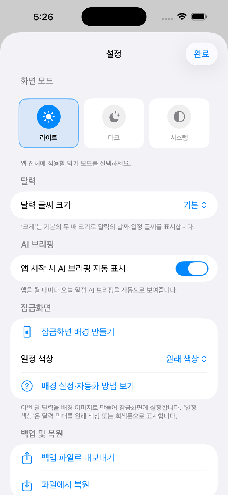
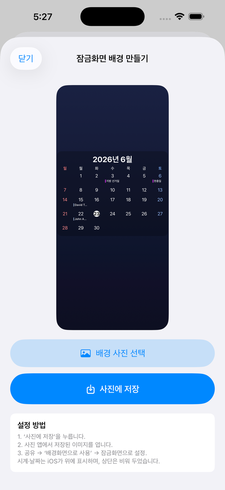
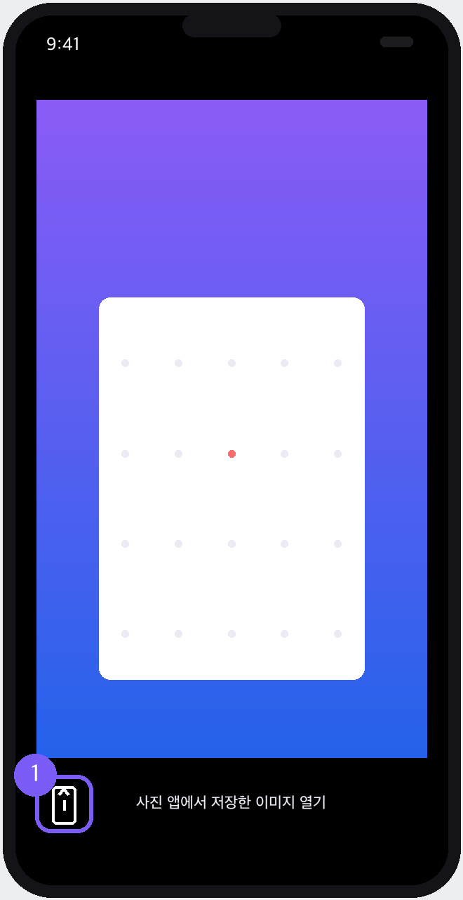
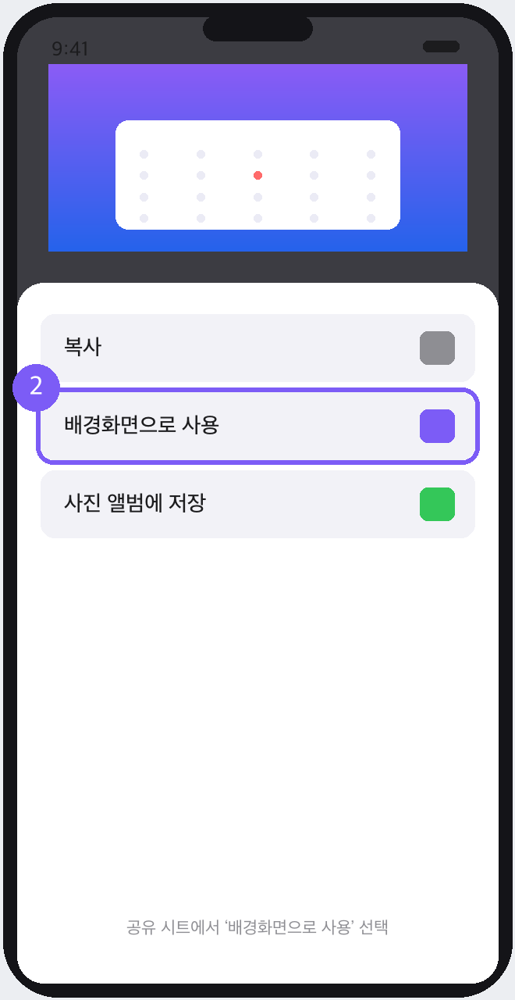
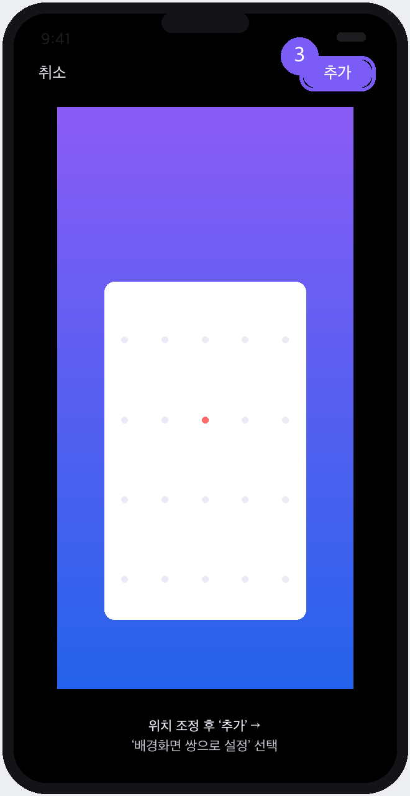
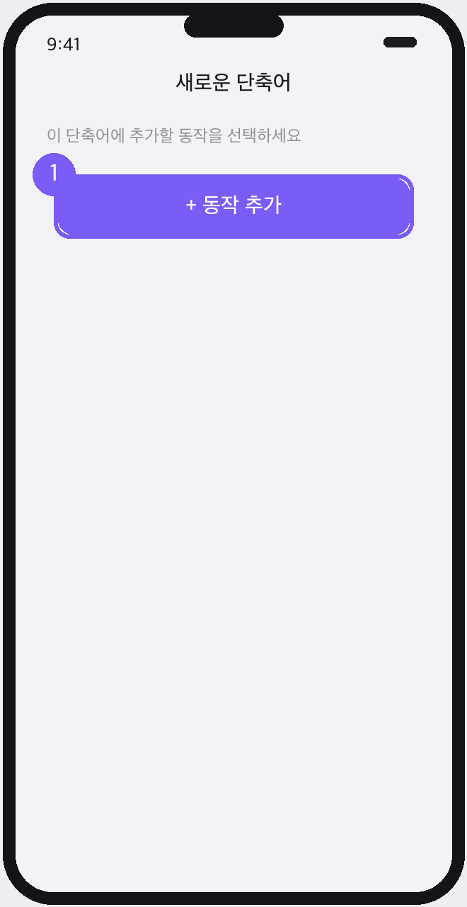
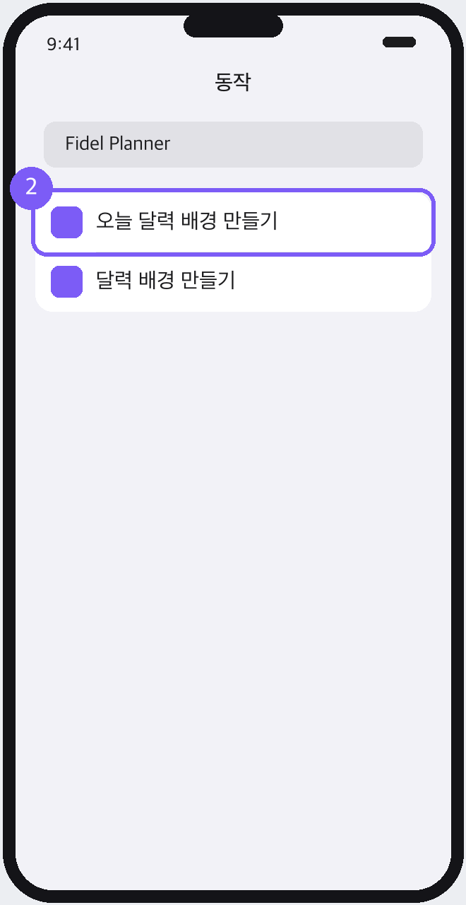
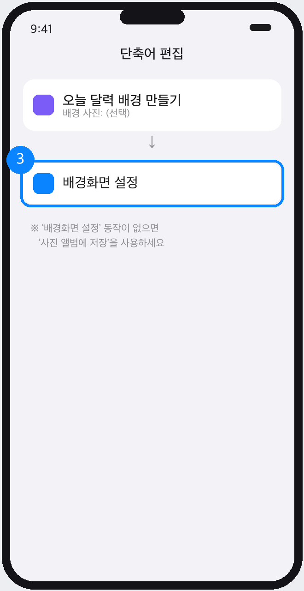
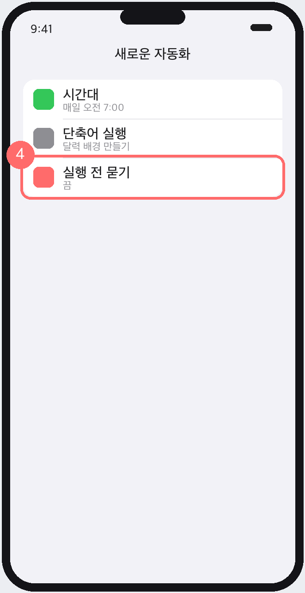

이번 달 달력을 잠금화면 배경으로 — 설정 방법과 매일 자동 갱신까지
① 직접 설정 — 앱에서 배경 이미지를 만들어 사진에 저장한 뒤 잠금화면으로 지정합니다.
② 자동화(단축어) — 매일 정해진 시각에 그날의 달력 배경을 자동으로 만들도록 설정합니다.
가장 간단한 방법입니다. 새 일정이 생기면 다시 만들어 설정하면 됩니다.
Fidel Planner의 설정을 열고 ‘잠금화면’ 항목의 잠금화면 배경 만들기를 탭합니다.

달력 배경 미리보기가 나타납니다. 원하면 배경 사진을 골라 뒤에 깔 수 있습니다. 확인했으면 사진에 저장을 탭합니다. (‘일정 색상’은 설정에서 원래 색상/회색톤 선택)

사진 앱을 열어 방금 저장한 달력 배경 이미지를 연 뒤, 왼쪽 아래 공유 버튼(￪)을 탭합니다.

공유 시트를 아래로 내려 배경화면으로 사용을 탭합니다.

달력이 잘 보이도록 위치·크기를 맞춘 뒤 오른쪽 위 추가를 탭하고, 배경화면 쌍으로 설정(또는 잠금화면만 적용)을 선택하면 끝입니다.

단축어 앱으로 ‘오늘 달력 배경 만들기’ 동작을 자동 실행합니다.
단축어 앱에서 새 단축어를 만들고 동작 추가를 탭합니다.

검색창에 Fidel Planner를 입력하고 오늘 달력 배경 만들기 동작을 선택합니다. 원하면 ‘배경 사진’ 입력에 깔고 싶은 사진을 지정할 수 있습니다.

이어서 배경화면 설정 동작을 추가하고, 입력으로 앞 단계의 결과(이미지)를 연결합니다.

단축어 앱의 자동화 탭 → 개인용 자동화 생성 → 시간대를 ‘매일 오전 7:00’ 등으로 정하고, 위에서 만든 단축어를 실행하도록 설정합니다. ‘실행 전 묻기’를 꺼야 손대지 않아도 자동으로 갱신됩니다.
